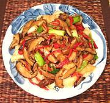

|
Fish with Mushrooms & GingerThailand | ||||
| Serves: Effort: Sched: DoAhead: |
2 main *** 45 min Most |
This recipe "in the Chinese style" is intensely flavorful but not "hot" because medium strength chilis are used and seeded before slicing. If you want you can hotten it up a bit with one or two Thai chilis. | |||
| The photo shows cut fish fillets, but you could also do a whole fish on a platter with sauce poured over, as is often done in Asia - impressive, but a lot more trouble for serving and eating. | |||||
|
12 3/4 1 2 1/2 3 2 ----- 1 1/2 2/3 ----- 1/2 1 ar 1/2 ar ar 1 |
oz oz cl oz in lrg --- T T c --- T T t T |
Fish Filet (1) Black Mushrooms Garlic Shallots Ginger root Red Chili (2) Scallions -- Sauce Fish Sauce (3) Oyster Sauce (4) Stock ---------- Corn Starch Water Rice Flour Salt Rice Flour Oil to fry Fish Oil |
Prep - (35 min - 20 min work)
|